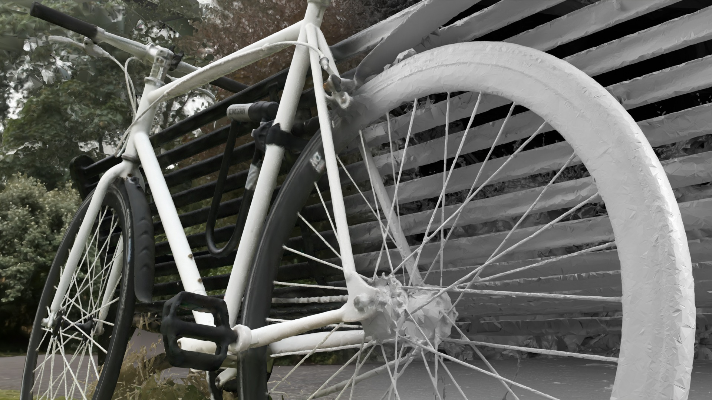

arXiv 2026
From Blobs to Spokes: High-Fidelity Surface Reconstruction via Oriented Gaussians
We interpret 3D Gaussians as stochastic oriented surface elements and derive closed-form vacancy and normal fields, enabling fast, watertight, and compact mesh extraction of full 3D scenes. Our method recovers extremely thin structures such as bicycle spokes while producing meshes with significantly fewer vertices than concurrent works.
*Both authors contributed equally to the paper.
@misc{gomez2026blobsspokeshighfidelitysurface,
title={From Blobs to Spokes: High-Fidelity Surface Reconstruction via Oriented Gaussians},
author={Gomez, Diego and Gu{\'e}don, Antoine and Maruani, Nissim and Gong, Bingchen and Ovsjanikov, Maks},
year={2026},
eprint={2604.07337},
archivePrefix={arXiv},
primaryClass={cs.CV},
url={https://arxiv.org/abs/2604.07337},
}